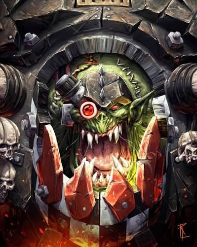
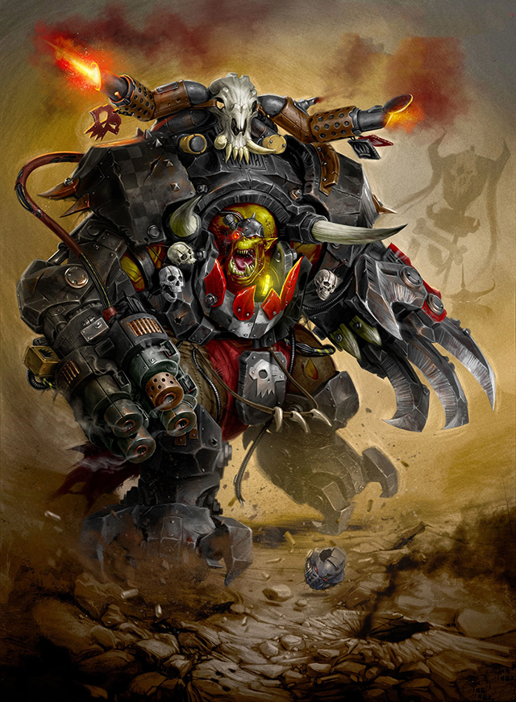
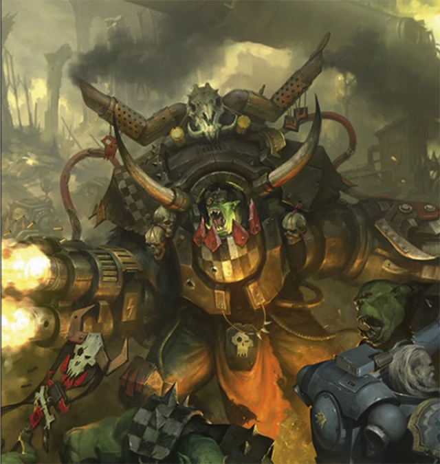
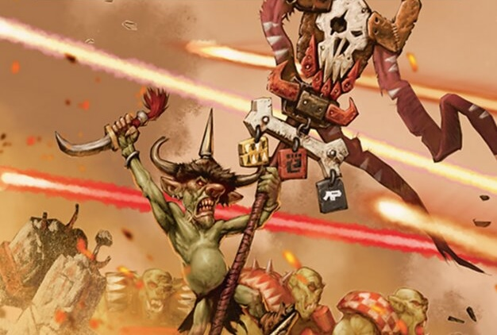
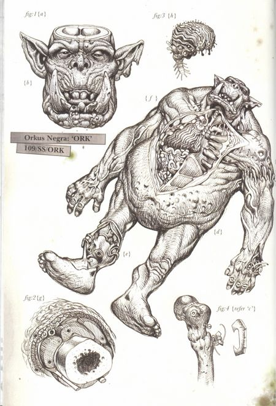

The prophet of gork and mork!!!!!!!!!


Ghazghkull Mag Uruk Thraka is the prophet of Gork and Mork, he is known as the biggest boss/prime ork. Ghazghkull started his life as an ork boy, which is a small ork he didn't have many thoughts about life or in general.
One day he was shot in the head and lost a big part of his brain. with the pain boys know wats he was almost as good as new.
as he fought more and more, he got bigger and bigger and as time went on, he started hearing voices. he and other orks think he is hearing Gork and Mork though it isn't clear if its just brain damage.

Well what dose Ghazghkull like. like any ork he loves o good fight one with lots of guts and blood and pain. he doesn't care who is hurting whether it's him or his foe. If he was to get hurt, he would just say it was a proper krupmpin.
he also likes a little Hummy called Comisar Yarik he is an honorary ork because he is not squishy like other Hummys. he also appreciates a good fungus beer but more than any thing he loves the grate whaaag. he will see the unaverse turn green. now his dislikes are far more simple he hates peace its boring. And wining to quick that makes the fight not a good fight. the best fight is one where he is near death.

Now he doesn't realy have friends but the closest thing to a friend he has is Makari his pet grot and Commissar Yarik. but for foes it would not be unreasonable to say that the universe is his enemy but hear is a few of them. space marines are Beekys, Eldar are Sqrawnies, demons are Teefy Things, Teranids are Bug Eyes, Drukhari are Spikies, Tau are Gun Runts, Necrons are Tinnies, The Kin are Stunti, Imperial Knight are Big Tinboy, Chaos Space Marines are Spikey Gitz, Genestealer Cultists are Funny looking 'Umies, Humans are 'Umies or 'ooman, Mechanicus are Cog Boyss.

for the medical history he has had many life changing surgeries and wounds. to start with the most infamous one, during a ride on a space marine outpost he was shot in the head with a bolt gun round which is a rocket propelled explosive round that is the size of a fist. as you can imagine his head was a bit of a mess. the orks brought him to mad doc Grotsnic as an experiment for a new Shoota.
the surgy to the docs suprise was successful and Ghazghkull woke up but after the surgy he started to hear voices that disturbed him witch made him mad so he started to grow bigger and bigger until he came to the conclusion that the voices were Gork and Mork.
Next, he was fighting with Ragnar Blackmain he lost his head literally it was cut off. but with the help of his orks he was brought back to the doc to get his head reattached during this surgery he was enlarged and got a new set of armor to make him the prime ork.